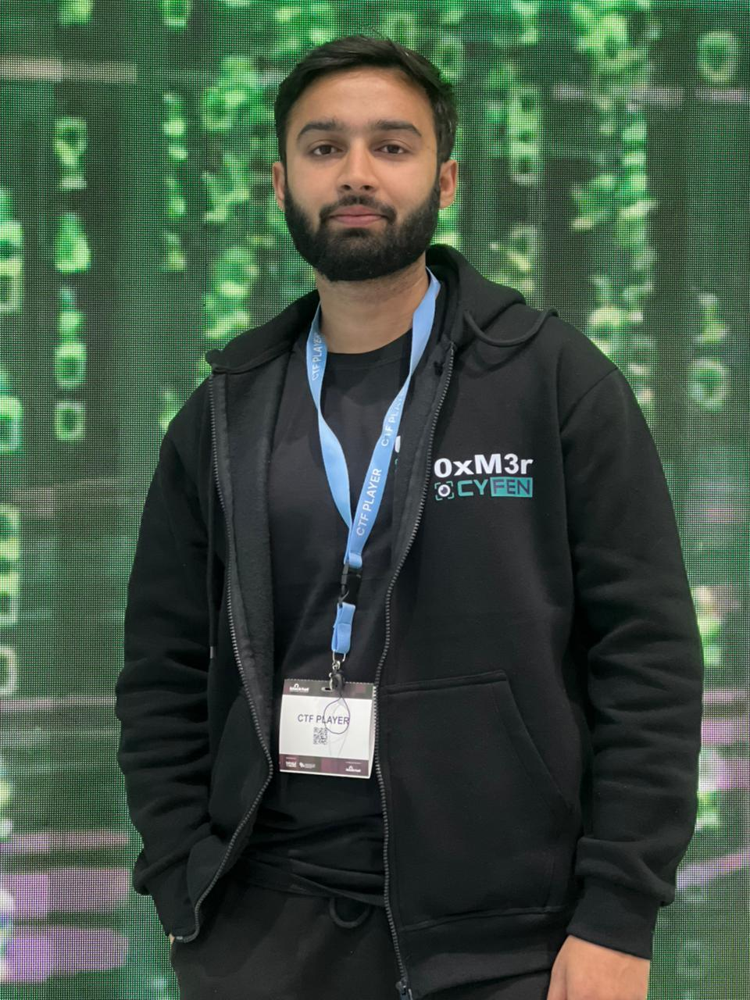

Cybersecurity Analyst
Defending systems. Investigating threats. Ensuring compliance.
Final-year Cybersecurity student at COMSATS who's spent two years doing the actual work. Two internships in live SOC environments, hands-on incident triage, vulnerability assessments, and building multi-cloud compliance tooling from scratch.
Top 50 at BlackHat MEA (Riyadh onsite finals), qualified for Insomnia Hacks onsite in Switzerland, lead a cybersecurity club, and build the CTF infrastructure others compete on.
Operating at the intersection of detection, response, and compliance.
Multi-cloud compliance assessment tool (AWS, Azure, GCP). Automates control checks against ISO 27001, NIST, GDPR, FedRAMP — eliminating manual audit bottlenecks.
Full-stack CTF platform for nationwide university competitions. Responsible for both infrastructure and challenges — Cryptography, Reverse Engineering, Digital Forensics.
CTF writeups, threat research, GRC insights, and security deep-dives.